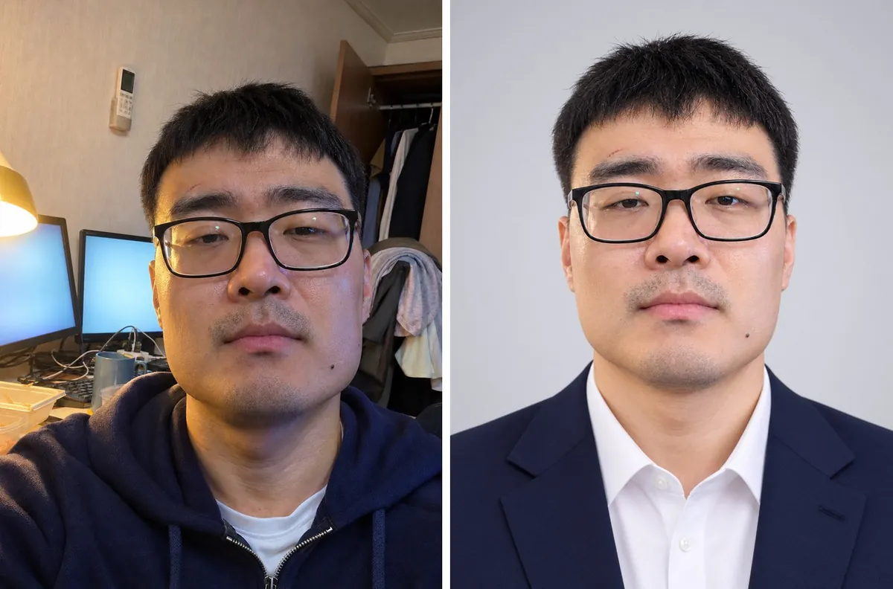
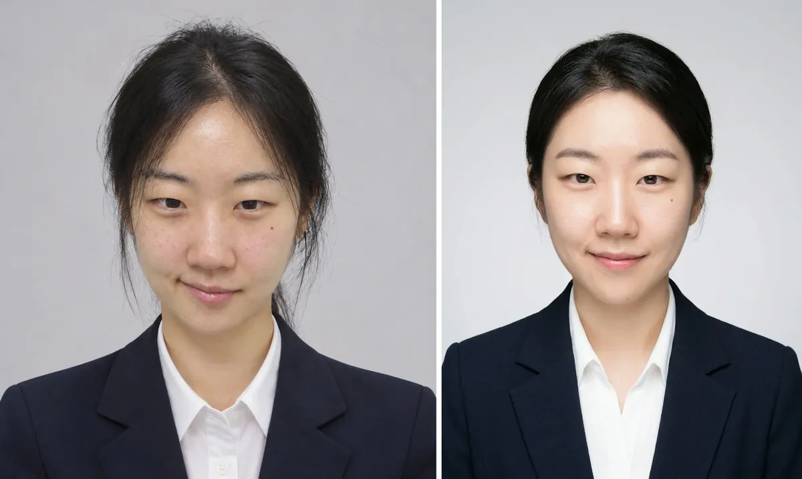
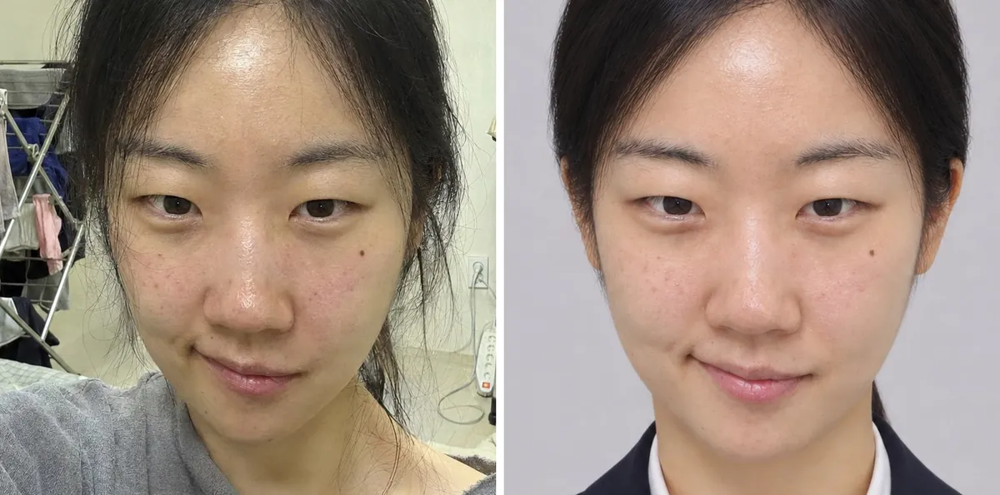
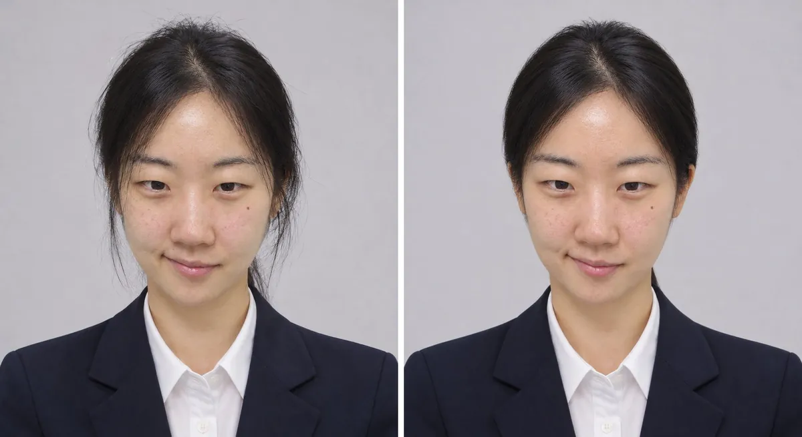
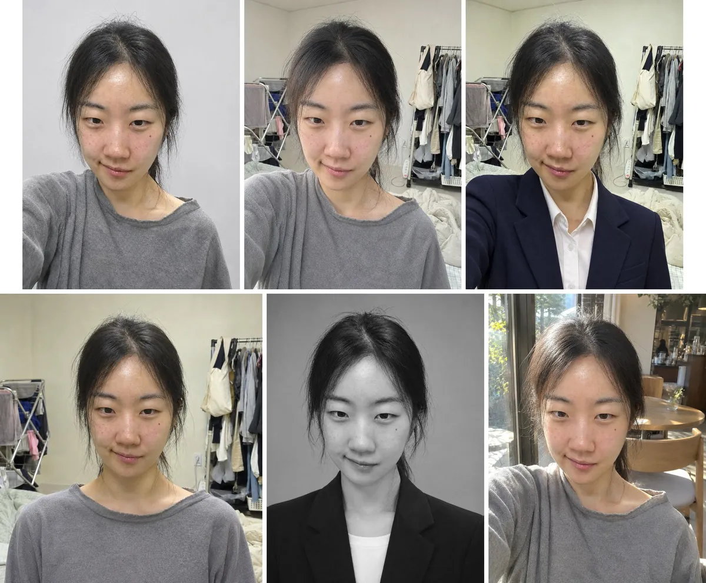
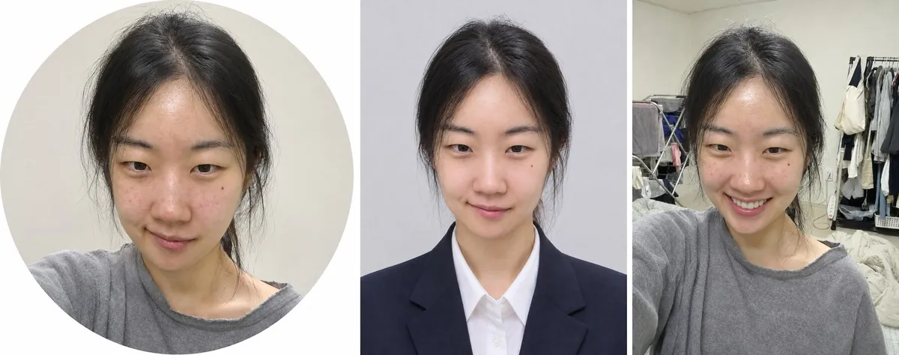

얼굴이 정면으로 크게 나온 사진이면 돼요. 방 조명, 어수선한 배경, 편한 옷이어도 괜찮아요.
저희는 두 장으로 해 봤어요. 하나는 형광등 아래 빨래가 널린 방에서 찍은 셀카예요. 하나는 스탠드 불빛 아래에서 안경을 쓰고 찍은 셀카예요.
사진 속 인물은 AI로 만든 예시예요. 실제 사람의 셀카로는 해 보지 않았어요.
앱
ChatGPT 앱이나 컴퓨터의 chatgpt.com을 써요.
저희는 컴퓨터(chatgpt.com)에서 했어요. 휴대폰에서 누르는 순서는 OpenAI 도움말을 따라 적었어요.
제미나이 앱으로도 됐어요. 1단계 끝에 적었어요.
무료로 되는 것과 아닌 것 (OpenAI 공식 도움말과 이용약관, 2026-11-21 읽음)
그림 만들기는 모든 요금제에서 쓸 수 있다고 나와 있어요. 사진 올리기도 무료 요금제에서 된다고 나와 있어요.
무료 요금제는 사진 올리기와 그림 만들기에 한도가 따로 있어요. 몇 장인지는 나와 있지 않아요. 한도에 닿으면 알림이 뜨고, 풀릴 때까지 기다려야 해요.
만 13세 이상이어야 쓸 수 있어요. 만 18세 미만은 부모님이나 법정대리인의 허락이 있어야 해요.
저희는 유료 계정(ChatGPT Pro)으로 해 봤어요. 무료 계정으로는 해 보지 않았어요.
1단계 · 한 번에 바꾸기
붙여 넣는 명령어
이 셀카를 사진관에서 찍은 프로필 사진으로 바꿔 줘. 얼굴 생김새와 점은 그대로 두고, 배경은 밝은 회색, 조명은 부드럽게, 옷은 네이비 재킷에 흰 셔츠, 정면에서 어깨까지 나오게.
배경 색과 옷은 원하는 것으로 바꿔 쓰세요. 저희는 위 값으로만 해 봤어요.
누르는 순서
ChatGPT 앱에서 새 채팅을 열어요. 「임시 채팅」은 쓰지 않아요.
입력창 왼쪽 「+」를 누르고 「사진 및 파일 추가」에서 셀카를 골라요.
위 명령어를 붙여 넣고 보내요.
30초쯤 기다려요. 저희는 25~46초 걸렸어요.
받은 사진을 누르고 「저장」을 골라요.
「사진 및 파일 추가」는 저희가 컴퓨터 화면에서 본 이름이에요. 「저장」은 도움말에 영어(Save)로 나온 이름이라 휴대폰에서는 조금 다를 수 있어요.
저희가 받은 결과 (2026-11-21)
같은 명령어를 첫째 셀카로 두 번, 둘째 셀카로 한 번 보냈어요.
세 번 모두 밝은 회색 배경, 네이비 재킷과 흰 셔츠, 정면 구도의 사진이 왔어요.
팔을 뻗어 찍은 셀카 자세가 사라지고 어깨가 반듯해졌어요.
얼굴은 같은 사람이었어요. 볼의 점, 홑꺼풀, 한쪽만 올라간 입꼬리가 그대로였어요.
둘째 셀카는 안경, 눈썹 위 흉터, 턱의 점, 수염 자국이 그대로였어요.
달라진 곳도 있어요. 눈 밑 그늘이 옅어지고 입술 색이 조금 붉어졌어요. 아래를 보던 눈은 정면을 봤어요.
둘째 셀카는 아래에서 올려 찍은 사진이었는데, 정면 사진이 되면서 턱이 더 갸름해 보였어요.
잔머리는 그대로 남았어요. 3단계에서 고쳐요.
사진 크기는 보낼 때마다 조금 달랐어요. 한 번은 가로 1196 · 세로 1315, 두 번은 가로 1087 · 세로 1447이었어요.

둘째 셀카(왼쪽)와 같은 명령어로 받은 사진(오른쪽).
제미나이 앱으로 할 때 (2026-11-21, 한 번씩)
새 채팅에서 입력창의 「+」로 첫째 셀카를 올리고 위 명령어를 그대로 보냈어요.

같은 명령어로 받은 사진 — 왼쪽 ChatGPT, 오른쪽 제미나이.
회색 배경, 네이비 재킷과 흰 셔츠, 정면 사진이 왔어요. 잔머리도 정리돼 있었어요.
볼의 점, 홑꺼풀, 다문 입은 그대로였어요.
볼의 주근깨는 거의 다 지워졌어요. ChatGPT 결과와 얼굴을 같은 크기로 놓고 보니 코가 조금 넓어 보였어요.
한 번만 해 본 결과라 늘 그렇다고 할 수는 없어요. 받은 사진은 2단계로 꼭 확인하세요.
「이 사진으로 프로필 사진 만들어 줘」만 보냈을 때는 베이지색 벽 앞에서 크림색 니트를 입은 사진이 왔어요. 옷은 시키지 않았는데 바뀌었어요.
제미나이의 사진 고치기는 만 18세 이상만 쓸 수 있다고 구글 도움말에 나와 있어요. 요금제가 없어도 그림 만들기는 된다고 나와 있지만, 내 사진 고치기를 따로 적은 줄은 없어요. 하루 몇 장인지도 나와 있지 않아요(2026-11-21 읽음). 저희는 유료 계정(Google AI Ultra)으로만 해 봤어요.
2단계 · 얼굴이 바뀌었는지 확인하기

보낸 셀카(왼쪽)와 받은 사진(오른쪽)의 얼굴을 같은 크기로 놓은 모습.
휴대폰 사진첩에서 보낸 셀카와 받은 사진을 번갈아 넘겨 봐요.
두 장 모두 두 손가락으로 얼굴을 똑같이 키워요.
세 곳만 봐요.
점이나 흉터가 원래 자리에 있나요?
눈꺼풀이 그대로인가요? 홑꺼풀이 쌍꺼풀로 바뀌지 않았나요?
입 모양이 그대로인가요? 다물었던 입이 벌어지거나 이가 보이지 않나요?
안경을 썼다면 안경테 모양도 봐요.
하나라도 다르면 그 사진은 쓰지 말고 새 채팅에서 다시 보내요. 결과는 보낼 때마다 달라요.
3단계 · 한 줄 더 보내기
붙여 넣는 명령어
잔머리만 단정하게 정리해 줘
사진을 받은 그 대화에 이어서 보내요. 사진은 다시 올리지 않아요.
저희가 받은 결과 (2026-11-21, 두 번)
두 번 모두 삐져나온 잔머리가 정리됐어요. 옆으로 내려온 머리는 귀 뒤로 넘어갔어요.
얼굴, 옷, 배경은 그대로였어요. 볼의 점도 제자리에 있었어요.
30~40초 걸렸어요.

한 줄 더 보내기 전(왼쪽)과 보낸 뒤(오른쪽).
하나씩만 바꾸는 명령어 여섯 개
셀카를 올리고 아래 한 줄만 보냈어요. 모두 새 채팅에서 한 번씩 해 봤어요. 「배경만」은 두 셀카로 한 번씩 해 봤어요.

윗줄은 배경만 · 조명만 · 옷만, 아랫줄은 구도만 · 흑백으로 · 다른 장소로.
바꿀 것: 배경만
붙여 넣는 명령어
얼굴과 옷은 그대로 두고, 배경만 밝은 회색 벽으로 바꿔 줘
저희가 받은 결과
방이 회색 벽으로 바뀌었어요. 옷과 팔을 뻗은 자세는 그대로였어요
바꿀 것: 조명만
붙여 넣는 명령어
얼굴은 그대로 두고, 창가에서 자연광을 받은 것처럼 조명만 부드럽게 바꿔 줘
저희가 받은 결과
누런 형광등 빛이 부드러워지고 눈 밑 그늘이 옅어졌어요. 방은 그대로였어요
바꿀 것: 옷만
붙여 넣는 명령어
얼굴과 머리는 그대로 두고, 옷만 네이비 재킷과 흰 셔츠로 바꿔 줘
저희가 받은 결과
옷만 바뀌었어요. 방과 팔을 뻗은 자세는 그대로였어요
바꿀 것: 구도만
붙여 넣는 명령어
얼굴은 그대로 두고, 셀카가 아니라 다른 사람이 정면에서 찍어 준 것처럼 어깨까지 나오게 바꿔 줘
저희가 받은 결과
뻗은 팔이 사라지고 어깨가 반듯해졌어요. 방과 옷은 그대로였어요
바꿀 것: 흑백으로
붙여 넣는 명령어
얼굴은 그대로 두고, 사진관에서 찍은 흑백 프로필 사진으로 바꿔 줘
저희가 받은 결과
회색 배경의 흑백 사진이 왔어요. 시키지 않았는데 옷이 재킷으로 바뀌었어요
바꿀 것: 다른 장소로
붙여 넣는 명령어
얼굴은 그대로 두고, 햇빛 드는 카페 창가에서 찍은 자연스러운 프로필 사진으로 바꿔 줘
저희가 받은 결과
배경이 햇빛 드는 카페로 바뀌었어요. 옷과 팔을 뻗은 자세는 그대로였어요
여섯 번 모두 볼의 점과 홑꺼풀은 그대로였어요.
「얼굴 생김새와 점은 그대로 두고」를 빼면
1단계 명령어에서 이 말만 빼고 두 번 보냈어요(2026-11-21).
뺀 두 번도 볼의 점, 홑꺼풀, 입 모양이 그대로였어요.
넣은 두 번과 얼굴을 크게 키워 나란히 봤어요. 차이를 찾지 못했어요.
두 번씩만 해 본 것이라 「빼도 된다」고 단정할 수는 없어요. 저희는 넣고 보내요.
짧게만 보내면
이 셀카를 사진관에서 찍은 프로필 사진으로 바꿔 줘. 얼굴 생김새와 점은 그대로 두고.
배경, 옷, 구도를 빼고 이 두 문장만 보냈어요(2026-11-21, 첫째 셀카 두 번 · 둘째 셀카 한 번).
세 번 모두 회색 배경에 네이비 재킷을 입은 사진이 왔어요.
옷과 배경은 적지 않았는데 앞서 시킨 것과 같았어요. 저희 계정은 ChatGPT의 「메모리」가 켜져 있었어요. ChatGPT가 앞선 대화를 참고했을 수 있어요.
둘째 셀카는 고개를 든 각도와 아래를 보는 눈이 그대로 남았어요.
처음 해 보는 분은 1단계의 긴 명령어를 쓰세요. 바꿀 것을 다 적으면 앞선 대화와 상관없이 같은 차림이 와요.
이렇게 쓰면 안 돼요

왼쪽부터 「프로필 사진 만들어 줘」 · 「예쁘게 보정해서」 · 「활짝 웃는」으로 받은 사진.
1. 「프로필 사진 만들어 줘」라고만 보내기
이 사진으로 프로필 사진 만들어 줘
맨 처음 보냈을 때는 셀카를 동그랗게 잘라 낸 사진만 왔어요. 방이 흰 벽으로 바뀌었을 뿐 옷과 빛은 그대로였어요.
실험을 여러 번 한 뒤 둘째 셀카로 다시 보냈더니 재킷 차림의 사진이 왔어요. 앞서 시킨 차림과 같았어요.
무엇을 바꿀지 적지 않으면 결과가 그때그때 달라요.
2. 「예쁘게 보정해 줘」라고 보내기
예쁘게 보정해서 프로필 사진으로 만들어 줘
볼의 붉은 기와 잡티가 거의 다 사라지고 눈썹이 진해졌어요. 점은 남았어요.
시키지 않은 재킷과 회색 배경도 함께 왔어요.
실제 얼굴보다 매끈한 얼굴이 돼요. 만나서 보면 사진과 달라 보일 수 있어요.
3. 표정을 바꿔 달라고 하기
얼굴은 그대로 두고, 이가 보이게 활짝 웃는 프로필 사진으로 바꿔 줘
이를 드러내고 웃는 사진이 왔어요. 원래 사진에는 이가 보이지 않았어요. AI가 지어낸 이예요.
눈도 웃는 눈으로 바뀌고 볼이 둥글어졌어요.
웃는 사진이 필요하면 웃으며 찍은 셀카를 올리세요.
4. 「임시 채팅」에서 보내기
사진 대신 「현재 임시 채팅에서는 이미지 편집 기능을 사용할 수 없어요」라는 답만 왔어요(2026-11-21).
이 사진을 쓰면 안 되는 곳
받은 사진은 AI가 다시 그린 사진이에요. 본인 확인에 쓰는 사진으로는 낼 수 없어요.
여권: 외교부 여권 안내의 「여권 사진」 쪽에 「사진 편집 프로그램, 사진 필터 기능 등을 사용하여 임의로 보정된 사진(AI를 활용한 편집·가공·합성·창조 제작물 포함)은 허용 불가함」이라고 적혀 있어요(2026-11-21 읽음).
주민등록증: 행정안전부가 2023년 8월 14일에 「AI프로필 사진은 주민등록증에 사용할 수 없다」고 밝혔어요. 변형할 수 있거나 본인 확인이 어려운 사진은 보완을 요구한다고 했어요.
운전면허증: 경찰청의 2026년 7월 15일 안내에는 여권용 규격 사진을 내야 하고 「과도한 보정」 사진과 「얼굴 식별 어려운 사진」은 안 된다고 나와 있어요. AI로 만든 사진을 따로 적은 문장은 찾지 못했어요.
이력서나 사원증처럼 받는 곳이 사진 규정을 둔 곳은 그 규정을 먼저 확인하세요.
메신저와 SNS 프로필, 발표 자료의 소개 사진처럼 본인 확인이 아닌 곳에 쓰세요.
지킬 것
내 사진만 올리세요. 다른 사람 사진은 그 사람의 허락을 받고 올리세요.
결과는 보낼 때마다 달라요. 쓰기 전에 2단계로 얼굴을 확인하세요.
올린 사진과 대화는 내 ChatGPT 기록에 남아요. 개인 요금제의 대화는 모델 학습에 쓰일 수 있다고 도움말에 나와 있어요. 설정의 데이터 제어(Data controls)에서 「Improve the model for everyone」을 끄면 새 대화는 쓰이지 않는다고 해요(OpenAI 도움말, 2026-11-21 읽음).
ChatGPT로 만든 그림 파일에는 AI로 만들었다는 정보가 들어간다고 도움말에 나와 있어요(2026-11-21 읽음). 보정하지 않은 사진이라고 하고 내지 마세요.
직접 해 본 날: 2026-11-21 · 도구: ChatGPT 웹(Pro 계정, 메모리 켜짐), 제미나이 웹 앱(Google AI Ultra 계정) · 예시 사진: AI로 만든 가상 인물 두 명